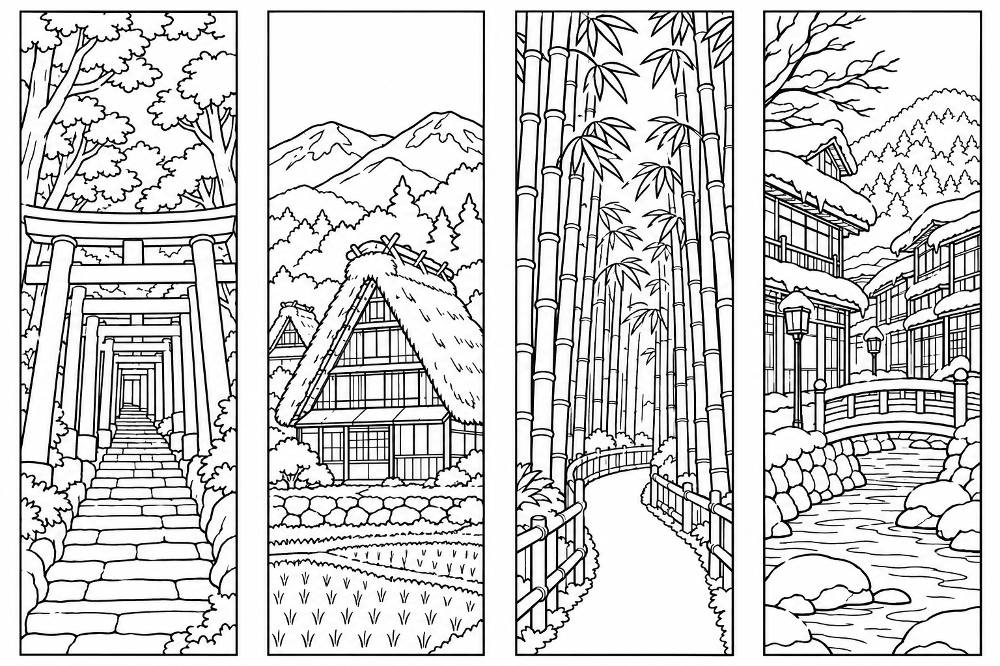
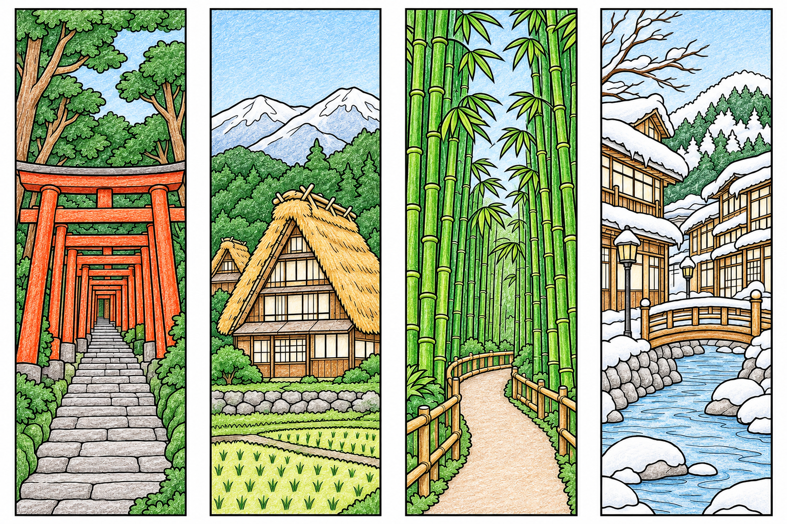
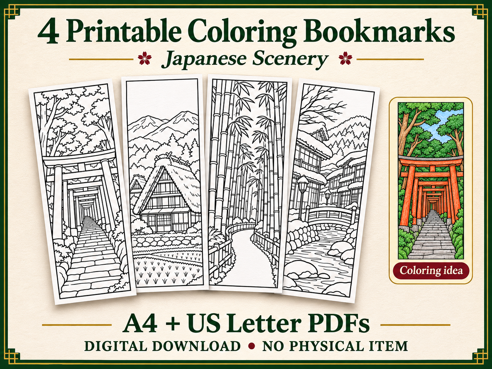
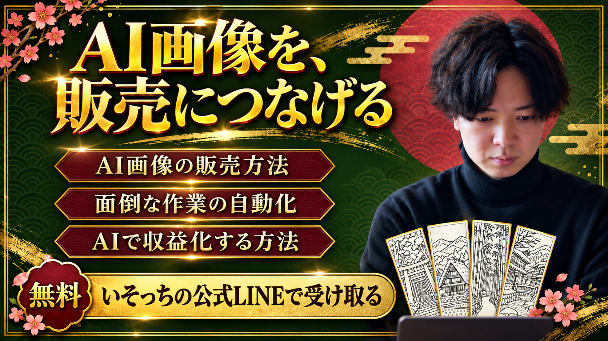

いそっち式 AI塗り絵しおり販売 制作から出品まで

解説動画
絵も英語も得意じゃない。
でも、海外向けに一つ作ってみたい。
そんな人へ。日本の風景を塗り絵しおりにして、印刷用PDFと英語の出品原稿までそろえます。
「稼げる方法教えて」だけでは、欲しい答えは返ってこない。
僕がおすすめするのは、AI×塗り絵しおり販売。作るものを決めれば、チャッピーに頼む内容も具体的になります。

線画4柄画像・印刷データ日本の風景を、塗り絵にする
ChatGPTの画像作成で、下の指示文を送ります。まずはこの4柄で試してみてください。

塗り絵を作る指示文
鳥居／合掌造り／竹林／雪の温泉街
日本好きの海外の人に、何の風景か伝わるものがおすすめです。今回は、鳥居の奥行きや合掌造りの屋根など、風景の特徴を残しています。
出てきたら、4本の枠・線の欠け・塗る面の広さを確認。細かすぎるときは「細線を減らし、塗れる面を広くして」と直します。
画像をPDFにして、印刷できる形へ
生成画像を保存し、同じチャットへ添付してPDF化を頼みます。見本はA4・US Letterの各1ページ。1本は約40×119mmです。
印刷PDFを作る指示文
保存したPDFを開き、「実際のサイズ／100%」で試し刷り。50mmの確認線を測り、色を塗って黒い枠に沿って切ります。
画像の保存と、PDFが作れないとき
商品名・説明文英語も、同じ作品を見せて頼む
線画PNGとPDF2点をChatGPTへ添付して、下の指示文を送ります。絵柄だけでなく、買う人へ渡すファイルもそろえて伝えます。

Print, color and cut four Japanese scenery bookmarks for your next reading session.
この原稿を、ここで使う
Title
AI利用の記載→説明文
Description
Tags
英語原稿を作る指示文
完成した英語原稿の全文
これは4柄・PDF2点に対応する原稿例。作る作品や同梱内容を変えたら、英語の枚数・寸法も合わせて直します。
Etsyの登録準備見せる画像と、渡すPDFを分ける
Etsyは、世界の人へデザイン作品を販売できるマーケット。ショップを準備したら、PCで次へ進みます。
登録する内容の対応図
デジタル商品
線画と使用見本
英語原稿→Title / Description
Tags
渡すファイル→Digital files
japan-bookmarks-a4.pdf
japan-bookmarks-letter.pdf
各必須欄
商品画像に「Digital download / No physical item」と表示して、現物の発送と間違われないように。彩色見本を載せるときも、購入者用は白黒だと伝えます。
ショップ準備と、公開前に確認すること
- 新規ショップは開店手続きが先。日本からの入金にはPayoneer経由のEtsy Paymentsが必要です。本人確認・支払い設定を自分で済ませます。開店手順・日本の入金準備
- ファイルは最大5点、各20MBまで。商品名は140文字以内、タグは最大13個・各20文字以内。デジタル商品の条件・タグの条件
- 自分の入力とデザインで制作し、AIを使った旨を説明文へ。権利を確認し、他人の作品は販売しません。制作基準
- 価格は販売先の手数料を確認して決めます。開店時の設定料、出品料、売上時の手数料などを確認。手数料
- PDF2点を開き直して試し刷り。商品画像、原稿、同梱ファイルが一致したら、必要欄を確認します。後で見直すならSave as Draft。内容と費用を確認して販売を始めるときにPublishを選びます。公式の出品手順
寝る前に頼んで、
朝は中身を確認する
作る画像、PDF、英語原稿までまとめて任せる。まずは同じ作業を1回通してから、繰り返す形にします。
テーマ・指示文
英語原稿
出品の判断
ChatGPTでWorkが使える環境なら、材料と下の指示文を渡して1回テストします。必要な画像制作・PDF保存の機能が使えるか、先に確認してください。
夜に任せる指示文
毎晩くり返す設定の手順
- 手動テストで、線画・PDF2点・英語原稿が実際に保存されたか確認する。
- スケジュールを利用できる環境で、下の設定依頼文を送る。実行場所と、毎回参照する入力も確認する。
- 表示された実行内容・毎晩23:00・Asia/Tokyoを確認し、自分で登録を確定する。
- Scheduledで有効な状態と次回予定を確認。最初の実行後は、実行履歴とファイルを開く。
ローカルのファイルを使う場合はPCとアプリを起動したままにします。クラウドではローカルフォルダを直接使えない環境もあるため、入力を参照できる形に。必要な承認や機能がなければ途中で止まることがあります。
定期実行の設定依頼文
出品の公開や課金まで、自動では任せません。朝に印刷結果・英文・権利・料金を確認してから進めます。
まずは、この1セットを使ってみる
- 4柄の線画と、印刷PDFを開ける
- 100%で印刷して、1本を塗って切れる
- 英語原稿と、購入者へ渡す内容が一致する
- 画像・原稿・PDFの登録先を区別できる
最初の一手は、A4の見本を1枚印刷すること。塗れる線画か、自分で確かめてみてください。
教材をまとめて保存閲覧ページ・見本PDF・指示文・英語原稿ZIPを展開し、中のindex.htmlをブラウザで開くと、この手順を見返せます。PDFは印刷、TXTは文字を変えて使えます。
しおりのデータがそろったら、次は販売の進め方や、面倒な作業の任せ方。僕の公式LINEでは、AI画像の販売方法・自動化・AIで収益化する方法のノウハウをお配りしています。

公式LINEでノウハウを受け取る受け取りは無料です。